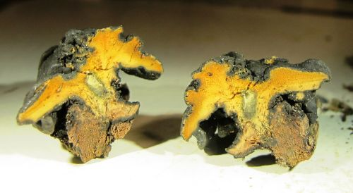
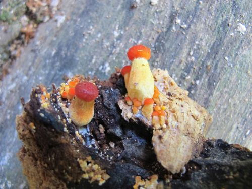
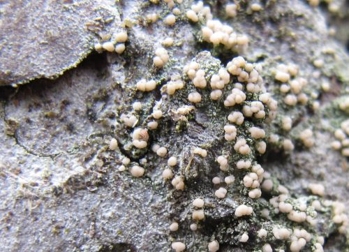
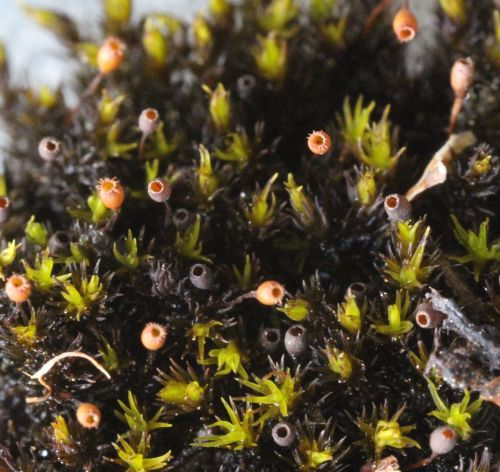

Lillabrun rødspore Entoloma porphyrophaeum er en ganske stor og kraftig
beitemarkssopp. Den synes å
forekomme hyppigst i seterområdene, her ved Gammelsetra i Grøvudalen (MR
Sunndal) i
august 2014.
Rosa vokssopp Hygrocybe calyptriformis (vil bytte navn til
Porpolomopsis calyptriformis) ble i 2014 funnet to steder i
Nord-Hordaland, og er nå kjent fra åtte lokaliteter i landet, alle på
Vestlandskysten. Arten er trolig oseanisk og har sine største europeiske
forekomster på de britiske øyer. Bildet er fra naturbeitemark i
kystlynghei ved Lyngheisenteret på Lygra (Ho Lindås). Arten er med i et
faggrunnlag som foreslår seks beitemarkssopper som prioriterte arter
etter naturmangfoldloven.
Musserongvokssopp Hygrocybe fornicata (vil bytte navn til
Cuphophyllus fornicatus) er en av de mindre vanlige
beitemarkssoppene, her fra en slåttemark ved Kjelbotn i MR Vestnes.
Skarlagenvokssopp Hygrocybe punicea er en av de store og
lett gjenkjennelige beitemarkssoppene. Den er særlig vanlig på
Vestlandskysten, ofte i gamle utmarksbeiter i lyngheiregionen. Den er
også en god matsopp. Soppene på bildet er fra Vestgård i MR Gjemnes,
forøvrig i en intakt slåttemark som huser landets nordligste voksested
for solblom Arnica montana.
Papillvokssopp Hygrocybe subpapillata er en sjelden
representant for engvokssoppene (tidligere kalt fagervokssopper). I 2014
ble det funnet flere nye lokaliteter i Møre og Romsdal, bildet er fra
Stølen i Isfjorden (MR Rauma).
Grå narremusserong Porpoloma metapodium er en stor og ganske
sjelden beitemarkssopp. Det virker som den finnes mest i gamle og
artsrike naturbeitemarker. Soppene på bildet er fra Rønningan på Kuli i
MR Smøla, en lokalitet hvor arten ble funnet i 1992 og så gjenfunnet i
2014. Arten er også med i et faggrunnlag som foreslår seks
beitemarkssopper som prioriterte arter etter naturmangfoldloven.
Hvit kragesopp Stropharia albonitens regnes ikke som
beitemarkssopp, men finnes ofte i beitemarker der den gjerne vokser i
sølvbunketuer. Her fra slåttemark på Nordhaug i MR Molde.
Vranglodnetunge Trichoglossum walteri er en sjelden jordtunge
som kan være en norsk ansvarsart (mange lokaliteter i Norge sammenlignet
med andre land). Den er også med i et faggrunnlag som foreslår seks
beitemarkssopper som prioriterte arter. Bildet er fra Kriken i MR
Vestnes.
Lav- og sopparter i edellauvskog
Annulohypoxylon minutellum ble funnet som ny for Norge av
Björn Nordén i Lille Gullkrona, Vf Tønsberg i 2013. Bildet er fra samme
sted i 2014. Arten vokser på eik og er første funn i Skandinavia, jf.
artikkel i Agarica 2014.
Lindekullsopp Biscogniauxia cinereolilacina finnes på læger
av lind, ofte på store stokker. Bildet er tatt i Gjuvstøyllia ved Dalen,
Te Tokke.

Chlorostroma vestlandicum er en merkelig sopp som er svart
utenpå og oransje inni. Den ser ut til å være parasitt på almekullsopp
Hypoxylon vogesiacum og er bare funnet på død ved av alm. Denne
arten ble beskrevet som ny for vitenskapen i 2014. Bildet er tatt
innendørs av materiale samlet på typelokaliteten Knutsliøyan
naturreservat i MR Sunndal.
Den nybeskrevne arten Chlorostroma vestlandicum (til høyre)
fotografert på en almestokk på typelokaliteten Knutsliøyan naturreservat
i MR Sunndal. Til venstre almekullsopp Hypoxylon vogesiacum som
den vokser på.
Gul duftrødspore Entoloma pleopodium er en ganske anonym
rødspore-sopp som vokser på jord i edellauvskog. Den har imidlertid en
meget påfallende lukt. Bildet er fra almeskog i Loi naturreservat, SF
Luster.
Almeskinn Granulobasidium vellereum er en sjelden barksopp som
vokser på gamle stokker av alm. Bildet er fra Eikesdalen i MR Nesset,
som er ny nordgrense for denne arten.
Hvit vedkorallsopp Lentaria epichnoa er her fotografert på
en askestokk i Gjuvstøyllia ved Dalen, Te Tokke.
Rynkesagsopp Lentinellus vulpinus er en ganske sjelden art som
ofte vokser på gamle almestokker. Bildet er fra Ljåstranda i Eikesdalen,
MR Nesset.
Granathuldrehatt Melanophyllum haematospermum er en sjelden
hattsopp som finnes i edellauvskog. Bildet er fra Loi naturreservat i SF
Luster.
Gul vokspigg Mycoacia uda er en uvanlig barksopp som bl.a. kan
vokse på gamle almestokker. Bildet er fra Ljåstranda i Eikesdalen, MR
Nesset.
Vedtraktsopp Ossicaulis lignatilis vokser her på et dødt parti
på en levende gammel styva alm i Knutsliøyan naturreservat, MR Sunndal.

Skarlagenskjermsopp Pluteus aurantiorugosus er en meget vakker
og meget sjelden sopp som vokser på død ved av alm, ofte inne i hulrom.
Bildet er fra Ljåstranda i Eikesdalen, MR Nesset.
Kastanjestilkkjuke Polyporus badius virker å være en art
tilknyttet gamle almestokker. Den er stor og ganske sjelden. Undersida
er hard og med små porer. Bildet er fra Loi naturreservat i SF Luster.
Skjellkjuke Polyporus squamosus forekommer også ofte på gamle
almestokker, og kan da bli ganske stor. Den største hatten på bildet er
60 cm i diameter! Bildet er fra Loi naturreservat i SF Luster.
Stubbekorallsopp Ramaria apiculata vokser som navnet tilsier på
død ved, her på en almelåg i Knutsliøyan naturreservat, MR Sunndal.
Stictis radiata er en nedsenket, urne- eller krukkeformet
sekksporesopp som ofte vokser på bark, her av en levende, gammel alm i
Sandvika, MR Skodje.
Ny soppart for landet på ospebark
Caliciopsis calicioides er en meget særpreget liten
sekksporesopp som minner om en knappenålslav, derav også det latinske
navnet. Merk "kulen" på midten hvor sporesekker og sporer dannes. Den
vokser i barksprekker på grove og gamle, levende ospetrær, og synes å
være en gammelskogstilknyttet art. Den ble publisert som ny for Norge i
Agarica i 2014. Bildet er fra Rislia i MR Molde.
Caliciopsis calicioides i barksprekker på en gammel osp ved
Durmålhaugen i MR Tingvoll. "Nålene" sitter på små svarte "plater" som
kalles et stroma.
Moser og lav i oseaniske områder på Vestlandet
Praktdraugmose Anastrophyllum donnianum er en oseanisk mose som
vokser i glissen nordvendt furuskog og heier i og like over skoggrensa i
de fuktigste områdene på Vestlandet. Bildet er fra Bortnedalen i SF
Bremanger.
Arthonia ilicina er en flekklav (slekta Arthonia) som
vokser på løvtrær med glatt bark (rogn, hassel) i oseaniske strøk på
Sørvestlandet, hovedsakelig Sunnhordland. Bildet er fra Petarteigsvatnet
i Ho Stord.
Arthonia stellaris er en flekklav-art som vokser på løvtrær med
glatt bark i oseaniske områder fra Agder til Møre og Romsdal.
Fruktlegemene er mørke og ofte stjerneformet, derav det latinske navnet.
Bildet er fra en ask på Spyssøya, Ho Bømlo.
Gullhårmose Breutelia chrysocoma er en oseanisk mose som finnes
langs kysten fra Agder til Nordmøre og såvidt Trøndelag. Bildet er
resultat av en vellykket reinventering av en gammel lokalitet (fra ca.
1870!) ved Veblungsnes i MR Rauma, som er uvanlig langt inne i fjordene
for denne arten.
Kystblæremose Frullania jackii er en sjelden mose med sine
fleste kjente voksesteder på Vestlands-kysten. Bildet er fra Osen i SF
Flora.
Kystskriftlav Graphis elegans vokser på bark av f.eks. bjørk i
meget oseaniske strøk av Vestlandet fra Rogaland til Sogn og Fjordane.
Den har en tykk, stripet kant i forhold til den vanlige skriftlaven.
Bildet er fra Røyrtjønna i Ho Stord.
Fossegrimemose Herbertus stramineus er en meget fuktkrevende
mose med relativt få voksesteder på ytre Vestlandet, og ved enkelte
store fosser lenger inn. Bildet er fra Svardalsvatnet i SF Flora.
Trinnkrekmose Lepidozia cupressina er en sjelden, oseanisk
moseart som finnes i nordvendte berg og beskyttede steder i lavlandet,
mest i lyngheistrøkene i ytre Hordaland. Bildet er tatt ved Røyrtjønna i
Ho Stord.

Micarea alabastrites er en lavart som vokser mest på bark av
levende furu i meget oseaniske skoger på Vestlandet fra Rogaland til
Sunnfjord. Bildet er fra Valvatnavågen i Ho Stord.
Kystkolve Pilophorus strumaticus er en lavart som vokser på
berg oftest i kystnære strøk fra Oslofjorden til Sør-Trøndelag. Bildet
er fra Klenvågen i Ho Stord.
Gul pærelav Pyrenula occidentalis regnes som en kjennetegnende
art for boreonemorale regnskoger, og finnes fra Rogaland til
Sør-Trøndelag. Bildet er fra Valvatnavågen i Ho Stord.

Kulegråmose Racomitrium ellipticum finnes fra Rogaland
til Nordland, og regnes som en oseanisk moseart. Bildet er fra Ålfoten i
SF Bremanger.
Stjernerurlav Thelotrema (Crutarndina) petractoides er en av de
sørlig-oseaniske lavartene som vokser på glatt bark av hassel og rogn.
Den er kjent fra Hordaland og ett funn i Sogn og Fjordane. Bildet er fra
Valvatnavågen i Ho Stord.
Hasselrurlav Thelotrema suecicum vokser på hassel, og er kjent
fra Oslofjorden til Nordmøre, men synes å være vanligst på
Nordvestlandet. Utbredelsen tyder på en suboseanisk art. Bildet er tatt
sørøst for Raudtuva i MR Fræna.
Ulota calvescens er en moseart som er relativt vanlig i
Storbritannia, men relativt nylig funnet i Norge. Den har bl.a. en snau
hette (calyptra) på kapselen. Bildet er fra Geitåsen i Ho Stord og ble
funnet av Hans Blom.
Planter
Myrkråkefot Lycopodiella inundata er en myrplante med en
suboseanisk utbredelse nord til Nordland. Bildet er fra Kavliheia i MR
Rauma.
Strandstjerne Tripolium pannonicum ssp. tripolium er
en strandplante som her er fotografert på grusstrand i Inner Klovågen,
MR Smøla.